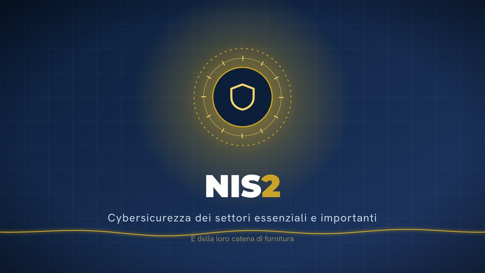

ARG
ARGARGOS › La normativa in 4 minuti › NIS2
NIS2 in 4 minuti: Italia: legge applicata per fasi
NIS2 è la direttiva europea di cybersicurezza per i settori essenziali, e per la loro catena di fornitura. Aspettare non protegge. Tutta la catena risponde. In Italia NIS2 è legge, applicata per fasi.

- 0:00L'attacco
- 0:11Le sanzioni
- 0:29In Italia
- 0:58NIS2
- 1:08Quattro passi
- 1:26Dieci misure
- 1:44Date
- 2:02Europa
- 2:27L'ACN
- 2:44Cosa fare
Dati chiave
- 10 M€ o il 2 % del fatturato · soggetti essenziali
- 16.10.2024 in vigore il D.Lgs. 138/2024
- Gen. 2026 parte la notifica degli incidenti
- 31.10.2026 misure di base esigibili
- Oggi tutte le fasi di base operative
- D.Lgs. 138/2024 In vigore da ottobre 2024
- ACN Con il CSIRT Italia
- Notifiche Attive da gennaio 2026
Trascrizione
Testo completo della voce narrante
0:00 · L'attacco
Lunedì, le sei del mattino. I sistemi non si avviano. I file sono cifrati. Il fornitore non risponde. Chi avvisa chi, e in quanto tempo?
0:11 · Le sanzioni
La direttiva NIS2 prevede sanzioni fino a dieci milioni di euro o il due per cento del fatturato per i soggetti essenziali. E impone di notificare gli incidenti in tre tempi: 24 ore, 72 ore e un mese. Gli organi di gestione approvano le misure e ne rispondono.
0:29 · In Italia
In Italia NIS2 è legge, applicata per fasi. Il decreto legislativo 138 del 2024 è in vigore da ottobre 2024. Un'autorità centrale: l'ACN, con il CSIRT Italia. La notifica degli incidenti è attiva da gennaio 2026. Le misure di base sono esigibili da ottobre 2026. E i clienti la chiedono già nei contratti.
0:58 · NIS2
NIS2 è la direttiva europea di cybersicurezza per i settori essenziali, e per la loro catena di fornitura. Aspettare non protegge. Tutta la catena risponde.
1:08 · Quattro passi
Cosa chiede, in quattro passi. Capire se si è soggetti essenziali o importanti. Registrarsi presso l'ACN. Applicare le dieci misure, approvate dai vertici. E notificare gli incidenti nei tempi. La sicurezza dei fornitori è una delle dieci misure.
1:26 · Dieci misure
Fra le dieci misure, quattro fanno la differenza. Analisi dei rischi e politiche di sicurezza. Gestione degli incidenti e continuità operativa. Sicurezza della catena di fornitura. E autenticazione multifattore e cifratura. Articolo 21 della direttiva.
1:44 · Date
Le date italiane. 16 ottobre 2024: entra in vigore il decreto. Gennaio 2026: parte la notifica degli incidenti. 31 ottobre 2026: le misure di base diventano esigibili. E oggi: tutte le fasi di base sono operative.
2:02 · Europa
In Europa NIS2 è già legge in molti paesi. Germania: 29.500 soggetti, vertici responsabili. Italia: misure di base esigibili. Belgio: CyberFundamentals. Portogallo: dirigenti responsabili. Paesi Bassi: senza transizione. Danimarca: vigilanza per settori. Francia e Spagna sono ancora senza legge.
2:27 · L'ACN
In Italia c'è un'autorità centrale: l'Agenzia per la Cybersicurezza Nazionale. Il CSIRT Italia riceve le notifiche. Le sue determinazioni fissano registrazione, notifiche e misure. Un unico interlocutore per oltre ottanta tipologie di soggetti.
2:44 · Cosa fare
Cosa fare adesso. Verificare il perimetro, registrarsi, applicare le misure, preparare le notifiche e coinvolgere i fornitori. ARGOS lo verifica in continuo, con sonde sui sistemi reali e prove per l'auditor e il cliente. NIS2: la cybersicurezza si dimostra.
Domande frequenti
Che cos’è NIS2?
NIS2 è la direttiva europea di cybersicurezza per i settori essenziali, e per la loro catena di fornitura. Aspettare non protegge. Tutta la catena risponde. La direttiva NIS2 prevede sanzioni fino a dieci milioni di euro o il due per cento del fatturato per i soggetti essenziali. E impone di notificare gli incidenti in tre tempi: 24 ore, 72 ore e un mese. Gli organi di gestione approvano le misure e ne rispondono.
Che cosa richiede NIS2?
Cosa chiede, in quattro passi. Capire se si è soggetti essenziali o importanti. Registrarsi presso l'ACN. Applicare le dieci misure, approvate dai vertici. E notificare gli incidenti nei tempi. La sicurezza dei fornitori è una delle dieci misure.
Quali sono le date chiave?
Le date italiane. 16 ottobre 2024: entra in vigore il decreto. Gennaio 2026: parte la notifica degli incidenti. 31 ottobre 2026: le misure di base diventano esigibili. E oggi: tutte le fasi di base sono operative.
Qual è la situazione in Italia?
In Italia NIS2 è legge, applicata per fasi. Il decreto legislativo 138 del 2024 è in vigore da ottobre 2024. Un'autorità centrale: l'ACN, con il CSIRT Italia. La notifica degli incidenti è attiva da gennaio 2026. Le misure di base sono esigibili da ottobre 2026. E i clienti la chiedono già nei contratti. In Italia c'è un'autorità centrale: l'Agenzia per la Cybersicurezza Nazionale. Il CSIRT Italia riceve le notifiche. Le sue determinazioni fissano registrazione, notifiche e misure. Un unico interlocutore per oltre ottanta tipologie di soggetti.
Che cosa deve fare un’impresa adesso?
Cosa fare adesso. Verificare il perimetro, registrarsi, applicare le misure, preparare le notifiche e coinvolgere i fornitori. ARGOS lo verifica in continuo, con sonde sui sistemi reali e prove per l'auditor e il cliente. NIS2: la cybersicurezza si dimostra.
Fonti ufficiali
- Direttiva (UE) 2022/2555 (NIS2) (EUR-Lex)
- Regolamento di esecuzione (UE) 2024/2690 (EUR-Lex)
- Agenzia per la cybersicurezza nazionale (ACN)
- Schede normative di Software in a Box
Continua con
 Data Act e DGA
Data Act e DGAData Act e DGA in 4 minuti: Italia: obbliga, ma manca chi vigila
 Qualificazione ACN e ISO
Qualificazione ACN e ISOQualificazione ACN e ISO in 4 minuti: Una prova non è un modulo
 GDPR
GDPRGDPR in 4 minuti: Si sanziona soprattutto l'essenziale
Voce e musica generate con intelligenza artificiale (art. 50 del regolamento sull’IA). Informazione generale, non costituisce consulenza legale; situazione a novembre 2026, secondo le schede normative di Software in a Box. Clip video su licenza Envato.
Per inserire questa presentazione in un altro sito: <iframe src="https://argos.softwareinabox.eu/it/normativa/nis2/presentacion/?embed=1" width="960" height="540" allow="autoplay; fullscreen" title="NIS2 in 4 minuti: Italia: legge applicata per fasi"></iframe> con un link a questa pagina.
Disponibile anche in: EspañolDeutschFrançaisFrançais (Belgique)NederlandsNederlands (België)PortuguêsDansk